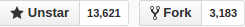
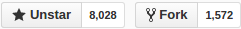
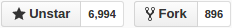

FrontEnd Framework Comparison
俞洋洋 前端开发
CSS预处理器
less
sass
stylus
比较
项目
基于
github
mixins
less
node

lesshat
sass
ruby

sass-css3-mixins
stylus
node

nib
包管理
duo
bower
npm
构建工具
grunt
gulp
模块管理
requirejs
seajs
systemjs
browserify
webpack
框架或库
Angular1
Angular2
React
Vue
Polymer
Meteor
Ember